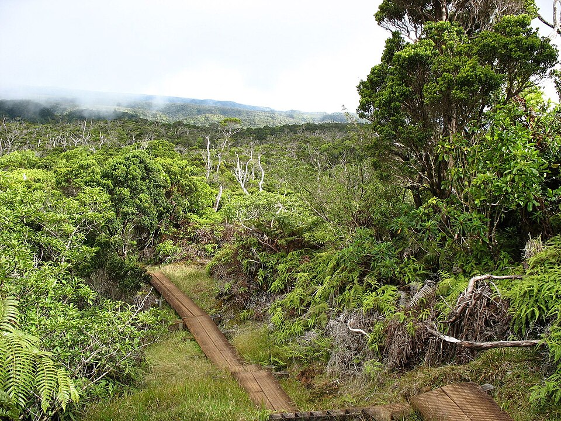

Alakaʻi Wilderness Preserve
Place: Alakaʻi Wilderness Preserve, Kauaʻi
Type: Wilderness preserve / montane bog / native cloud forest
Story it tells: A high-elevation wilderness where sacred Hawaiian traditions, one of Earth's wettest climates, and millions of years of evolution created one of Hawaiʻi's most extraordinary ecosystems.

Alakaʻi Wilderness Preserve protects nearly 9,000 acres of Kauaʻi's high interior plateau, immediately east of Kōkeʻe State Park and beneath the slopes of Mount Waiʻaleʻale. Although commonly called the "Alakaʻi Swamp," the landscape is not a true swamp but a rare montane bog, where nearly constant rainfall saturates an ancient volcanic plateau. Thick peat soils, shallow pools, moss-covered forests, and persistent clouds combine to create one of the most unusual ecosystems anywhere in the Hawaiian Islands.
The name Alakaʻi means "to lead" or "to guide," an appropriate description for a place where safe passage once depended entirely upon knowledgeable guides. Dense fog, hidden volcanic fissures, deep mud, and nearly featureless terrain made crossing the plateau both physically demanding and spiritually significant. Ancient Hawaiians regarded these uplands as part of the Wao Akua, the "Realm of the Gods," where chiefs and kahuna journeyed toward the summit of Waiʻaleʻale to offer prayers for the rains that nourished Kauaʻi's streams, loʻi kalo, and communities.
Skilled kia manu, or bird catchers, carefully navigated the forests to collect the feathers of native honeycreepers, which were woven into magnificent feather cloaks and helmets for the aliʻi. Travelers gathered rare medicinal plants, prized olonā fiber, and even sacred red clay used in ceremonial practices. Every journey required intimate knowledge of the landscape, reinforcing the preserve's contemporary role as both a cultural sanctuary and a place of survival.
Geology transformed the ancient volcanic summit into today's waterlogged wilderness. After Kauaʻi's shield volcano became dormant millions of years ago, its collapsed summit gradually filled with dense lava flows during volcanic rejunivations, that formed an impermeable basin. As moisture-laden trade winds continually struck the mountain, rainfall accumulated faster than it could drain away. Over thousands of years, partially decomposed vegetation built thick layers of peat, creating the saturated alpine bog that coats the preserve today. This immense natural sponge slowly releases water into rivers flowing toward every coast of the island, making the Alakaʻi one of the primary sources of the freshwater that sustains Kauaʻi.
Isolation and constant moisture also turned the preserve into a living laboratory of evolution. Many of its plants and animals occur nowhere else on Earth. Dwarf ʻōhiʻa lehua cling to nutrient-poor bogs only a fraction of their normal size, while tiny native sundews supplement the poor soil by trapping insects. The forests provide critical habitat for endangered birds including the ʻanianiau, puaiohi, ʻakikiki, and ʻakekeʻe, species whose survival increasingly depends upon these cool elevations as mosquito-borne avian malaria spreads uphill with a warming climate. The Alakaʻi was also the final refuge of the Kauaʻi ʻōʻō, whose haunting song was last recorded here before the species sadly disappeared forever.
Modern visitors experience the preserve primarily along the Alakaʻi Swamp Trail, where elevated boardwalks protect the fragile bog while allowing hikers to cross terrain that once swallowed boots, horses, and even heavy equipment. Earlier routes consisted only of rough paths through deep mud. During World War II, the U.S. Army stretched telephone lines across the plateau to connect military installations, remnants of which can still be found along portions of the trail. In the 1950s, engineers even attempted to build a highway across the Alakaʻi, abandoning the project after bulldozers sank into the peat. Today, conservation rather than development defines the preserve, with state agencies and volunteers maintaining boardwalks, controlling invasive species, and protecting one of Hawaiʻi's last great native wildernesses.
Few places better demonstrate the connection between Hawaiian language, geology, ecology, and culture than Alakaʻi Wilderness Preserve. The landscape continues to guide those who enter it, just as its name suggests, while quietly supplying the water, forests, and biodiversity that have sustained Kauaʻi.